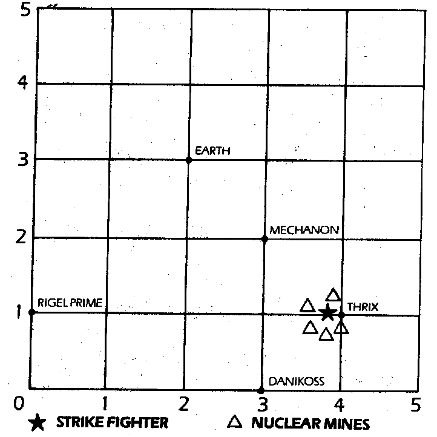

167
You return from the leisure park in time for a thorough rebriefing by section leaders Jobanque and Skirrow, and soon you are settled into the crash-couch of the first ever Weeks/Senior Corporation time travel Strike Fighter. You instruct your new version of CAIN to engage the Variac Drive and set coordinates for Mechanon 1986 AD. All goes grey and insubstantial, but after an hour in null-space you fail to materialise as planned. CAIN reports that there is a time flux disturbance. The droids of Mechanon have constructed a time flux destabiliser, trapping you in null-space! You can dimly see the factory planet below, hazy and insubstantial. CAIN says that you are trapped on a grid on which the timeholes of normal space have been forced into null-space. The Strike Fighter's sensors flash warning red and CAIN reports that the droids have sent five atomic mines equipped with anti-matter drives into the grid, one of which has just appeared in front of you and is hurtling towards you! The anti-matter drive enables the mines to travel across null-space anywhere in the grid of the destabilised field as if they were in real space. However, your Ion Drive will not function here, you can only hop from timehole point to timehole on the grid, instantaneously, using the Variac Drive. Psychic awareness is of no use here, but because of the nature of the field the variac navigational computers will interpret coordinate inputs in the normal way. You must use your Variac Drive to shift to a new timehole point on the grid, as the four other atomic mines diverge towards all of the timehole points. If you don't, the mines will obliterate you. CAIN flashes up a picture of the grid on your face-up display. Which coordinates will you type into the console?
| Rigel 0/ 0/ 1 | Turn to 225 |
| Mechanon 0/ 3/ 2 | Turn to 86 |
| Danikos 0/ 3/ 0 | Turn to 177 |
| Clyss 0/ 4/ 1 | Turn to 190 |
| Earth 0/ 2/ 3 | Turn to 202 |